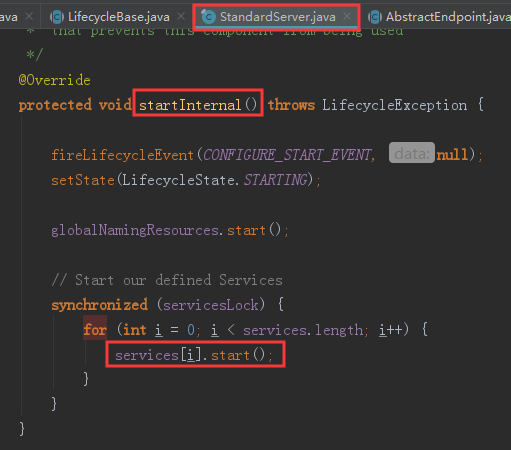
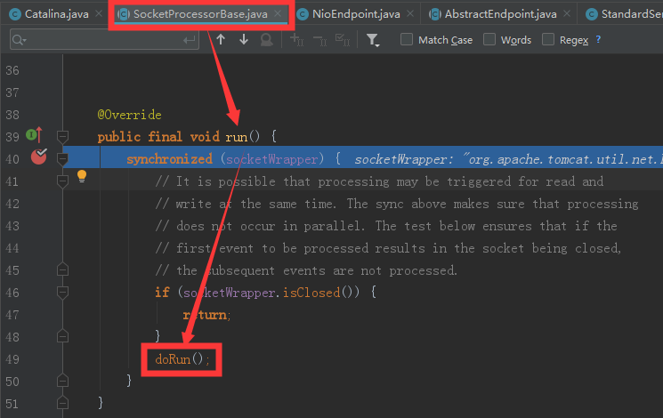
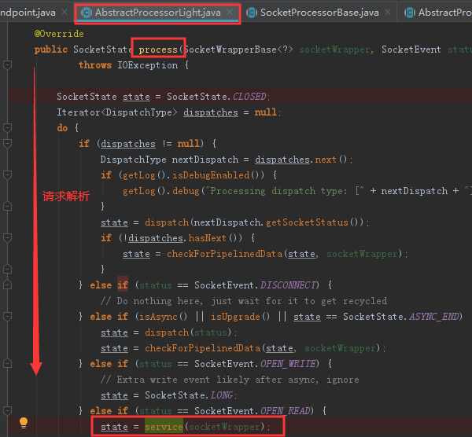

Tomcat
Tomcat
1.Tomcat目录结构
| 目录 | 目录下文件 | 说明 |
|---|---|---|
| bin | / | 存放Tomcat的启动、停止等批处理脚本文件 |
| startup.bat/startup.sh | 用于在windows和Iinux下的启动脚本 | |
| shutdown.bat/shutdown. sh | 用于在windows和linus下的停止脚本 | |
| conf | / | 用于存放Tomcat的相关配置文件 |
| Catalina | 用于存储针对每个虚拟机的context配置 | |
| logging.properties | Tomcat的日志配置文件，可以通过该文件修改tomcat的日志级别及日志路径等 | |
| server.xml | Tomcat服务器的核心配置文件 | |
| tomcat-users.xml | 定义Tomcat默认的用户及角色映射信息配置 | |
| web.xml | Tomcat中所有应用默认的部署描述文件，主要定义了基础servlet和时 | |
| context.xml | 用于定义所有web应用均需加载的context配置，如果web应用指定了自己的context. xml该文件将被覆盖 | |
| catalina.policy | Tomcat运行的安全策略配置 | |
| catalina.properties | Tomcat的环境变量配置l | |
| lib | / | Tomcat服务器的依赖包 |
| logs | / | Tomcat默认的日志存放目录 |
| webapps | / | Tomcat默认的web应用部署目录 |
| work | / | Web应用JSP代码生成和编译的临时目录 |
2.Tomcat整体架构
2.1.Http服务器处理请求
浏览器发给服务端的是一个Http格式的请求，Http服务器收到这个请求后，需要调用服务端程序来处理
所谓的服务端程序就是程序员写的Java类，一般来说不同的请求需要由不同的Java类来处理
如何确定所需要调用的业务Java代码？
左图方案✖
- Http服务器直接调用具体业务类，存在过多的if…else…判断，紧耦合
右图方案✔
- Http服务器不直接调用业务类，而把请求交给Servlet容器处理，Servlet容器通过Servlet接口调用业务类
- 因此Servlet接口和servlet容器的出现，达到了Http服务器与业务类解耦的目的
- Servlet接口和Servlet容器这一整套规范叫作Servlet规范
- Tomcat按照Servlet规范的要求实现了Servlet容器，同时它们也具有HTTP服务器的功能
- 作为Java程序员。如果要实现新的业务功能，只需要实现一个Servlet ,并将Servlet注册到Tomcat (Servlet容器)中，剩下的事情就由Tomcat帮我们处理了
2.2.Servlet容器工作流程
- 为了解耦，Http服务器不直接调用Servlet，而是把请求交给servlet容器来处理，那Servlet容器又是怎么工作的呢?
- 当客户请求某个资源时 HTTP服务器会用一个ServletRequest对象把客户的请求信息封装起来,然后调用Servlet容器的service方法
- 【定位Servlet】Servlet容器拿到请求后,根据请求的URL和Servlet的映射关系,找到相应的Servlet
- 【加载Servlet】如果servlet还没有被加载,就用反射机制创建这个Servlet，并调用Servlet的init方法来完成初始化
- 【调用Servlet】接着调用Servlet的service方法来处理请求，把servletResponse对象返回给HTTP服务器, HTTP服务器会把响应发送给客户端。
2.3.Tomcat整体架构
我们知道如果要设计一个系统，首先是要了解需求，我们已经了解了Tomcat要实现两个核心功能:
- 处理socket连接 ,负责网络字节流与Request和Response对象的转化
- 加载和管理Servlet ,以及具体处理Request请求
因此Tomcat设计了两个核心组件连接器( Connector )和容器( Container )来分别做这两件事情。
- 连接器负责对外交流
- 容器负责内部处理
2.4.连接器–Coyote
2.4.1.架构介绍
- Coyote是Tomcat的连接器框架的名称，是Tomcat服务器提供的供客户端访问的外部按口。客户端通过coyote与服务器建立连接、发送请求并接受响应
- Coyote封装了底层的网络通信(Socket请求及响应处理) , 为Catalina容器提供了统一的接口，使Catalina容器与具体的请求协议及IO操作方式完全解耦
- Coyote将Socket输入转换封装为Request对象，交由Catalina容号进行处理，处理请求完成后，Catalina通过Coyote提供的Response对象将结果写入输出流
- Coyote作为独立的模块，只负责具体协议和IO的相关操作，与Servlet规范实现没有直接关系，因此即便是Request和Response对象也并未实现servlet规范对应的接口，而是在Catalina中将他们进一步封装为ServletRequest 和ServletResponse。
2.4.2.IO模型与协议
在Coyote中，Tomcat支持的多种I/O模型和应用层协议
- 在8.0之前，Tomcat默认采用的I/O方式为BIO
Tomcat支持的I/O模型（自8.5/9.0版本起，Tomcat移除了对BIO的支持）
IO模型 描述 NIO 非阻塞I/O，采用Java NIO类库实现【8.5默认】 NIO2 异步I/O，采用JDK 7最新的NIO2类实现 APR 采用Apache可移植运行库实现，是C/C++编写的本地库。如果选择该方案，需要单独安装 Tomcat支持的应用层协议:
应用层协议 描述 HTTP/1.1 这是大部分Web应用采用的访问协议 AJP 用于和Web服务器集成(如Apache )。以实现对静态资源的优化以及集群部著，当前支持AJP/1.3 HTTP/2 HTTP 2. 0大幅度的提升了Web性能。下一代HTTP协议 ，自8 .5以及9.0版本之后支持 Tomcat为了实现支持多种I/O模型和应用层协议，一个容器可能对接多个连接器, 类比一个房间有多个门
单独的连接器或者容器都不能对外提供服务,需要把它们组装起来才能工作，组装后这个整体叫作Service组件。这里请你注意, Service本身没有做什么重要的事情，只是在连接器和容器外面多包了一层,把它们组装在一起
Tomcat内可能有多个Service ,这样的设计也是出于灵活性的考虑。通过在Tomcat中配置多个Service，可以实现通过不同的端口号来访问同一台机器上部署的不同应用
2.4.3.连接器组件
连接器中的各个组件的作用如下
Endpoint
- Coyote 通信端点，即通信监听的接口，是具体socket接收和发送处理器，是对传输层的抽象，因此Endpoint用来实现TCP/IP协议的
- Tomcat并没有EndPoint接口，而是提供了一个抽象类AbstractEndpoint，里面定义了两个内部类: Acceptor和SocketProcessor。
- Acceptor用于监听Socket连接请求。
- SocketProcessor用于处理接收到的Socket请求,它实现Runnable接口。在Run方法里调用协议处理组件Processor进行处理。为了提高处理能力, Socketprocessor被提交到线程池来执行，而这个线程池叫作执行器(Executor)
Processor
- Coyote协议处理接口，如果说EndPoint是用来实现Tcp/Ip协议的，那么Processor用来实现Http/AJP协议
- Processor接收来自EndPoint的Socket ,读取字节流解析成Tomcat Request和Response对象 ，并通过Adapter将其提交到容器处理，Processor是对应用层协议的抽象。
ProtocolHandler
- Coyote协议接口，通过Endpoint和Processor，实现针对具体协议的处理能力。
- Tomcat按照协议和I/O提供了6个实现类: AjpNioProtocol，AjpAprprotocol，AjpNio2Protocol ，Http11Nioprotocol ，Http11Nio2Protocol , Http11AprProtocol
- 我们在配置
tomcat/conf/server.xml时，至少要指定具体的ProtocolHandler，当然也可以指定协议名称，如:HTTP/1.1, 如果安装了APR，那么将使用Http11AprProtocol，否则
使用Http11NioProtocol。
Adapter
- 由于协议不同，客户端发过来的请求信息也不尽相同，Tomcat定义了自己的Request类来”存放”这些请求信息。
- ProtocolHandler接口负责解析请求并生成Tomcat Request类。但是这个Request对象不是标准的ServletRequest，也就意味着不能用Tomcat Request作为参数来调用容器。
- Tomcat设计者的解决方案是引入CoyoteAdapter，这是适配器模式的经典运用，连接器调用CoyoteAdapter的Sevice方法，传入的是Tomcat Request对象，CoyoteAdapter负责将Tomcat Request转成ServletRequest，再调用容器的Service方法
2.5容器–Catalina
- Tomcat是由一系列可配置的组件构成的Web容器，而catalina是Tomcat的Servlet容器。
- Catalina是Servlet容器实现，包含了之前讲到的所有的容器组件。以及后续章节涉及到的安全、会话、集群、管理等servlet容器架构的各个方面。
- 它通过松耦合的方式集成Coyote。以完成按照请求协议进行数据读写。同时,它还包括我们的启动入口、shell程序等。
2.5.1Catalina地位
Tomcat本质上就是一款Servlet容器，因此catalina才是Tomcat的核心，其他模块都是为Catalina提供支撑的。比如：通过Coyote模块提供链接通信，Jasper模块提供Jsp引擎，Naming提供JNDI服务，Juli提供日志服务。
2.5.2Catalina结构
- Catalina负责管理Server ,而Server表示着整个服务器。
- Server下面有多个服务Service。每个服务都包含着多个连接器组件Connector (coyote实现)和一个容器组件Container
- 在Tomcat启动的时候，会初始化一个Catalina的实例
Catalina各个组件的职责
组件 职责 Catalina 负责解析Tomcat的配置文件，以此来创建服务器Server组件,并根据命令来对其进行管理 Server 表示整个Catalina Servlet容器以及其它组件，负责组装并启动servlet引擎，Tomcat连接器。Server通过实现Lifecycle接口，提供了一种优雅的启动和关闭整个系统的方式 Service 是Server内部的组件，一个Server包含多个Service。它将若干个Connector组件绑定到一个Container (Engine)上 Connector 处理与客户端的通信，它负责接收客户请求，然后转给相关的容器处理，最后向客户返回响应结果 Container 负责处理用户的servlet请求,并返回对象给Web用户的模块
2.5.3.Container结构
- Tomcat设计了4种容器，分别是Engine，Host，Context和Wrapper
- 这4种容器不是平行关系，而是父子关系
- Tomcat通过一种分层的架构，使得servlet容器具有很好的灵活性
各个组件含义
容器 描述 Engine 表示整个Catalina的servlet引擎，用来管理多个虚拟站点，一个Service最多只能有一个Engine，但是一个引擎可包含多个Host Host 代表一个虚拟主机/站点。可以给Tomcat配置多个虚拟主机地址，而一个虚拟主机下可包含多个Context Context 表示个Web应用程序，一个Web应用可包含多个wrapper Wrapper 表示一个Servlet，Wrapper作为容眼中的最底层，不能包含子容器 - 可以通过Tomcat的Server.xml配置文件来加深对Tomcat容器的理解
- Tomcat采用了组件化的设计,它的构成组件都是可配置的，其中最外层的是Server ,其他组件按照一定的格式要求配置在这个顶层容器中
Tomcat是怎么管理这些容器?
Container接口部分方
- 这些容器具有父子关系，形成一个树形结构，Tomcat就是用组合模式来管理这些容器的
- 具体实现方法是,所有容器组件都实现了Container接口,因此组合模式可以使得用户对单容器对象和组合容器对象的使用具有一致性。
- 这里单容器对象指的是最底层的wrapper ,组合容器对象指的是上面的Context、Host或者Engine
2.6.Tomcat启动流程
2.6.1流程
- 加载Tomcat的配置文件，初始化容器组件，监听对应的端口号，准备接受客户端请求
1 | - 启动tomcat，需要调用bin/startup.bat (在linux目录下，需要调用bin/startup.sh)，在startup.bat 脚本中，调用了catalina.bat |
2.6.2.源码解析
2.6.2.1.Lifecycle
由于所有的组件均存在初始化、启动、停止等生命周期方法，拥有生命周期管理的特性
所以Tomcat在设计的时候，基于生命周期管理抽象成了一个接口Lifecycle , 而组件Server、Service, Container，Executor，Connector组件，都实现了一个生命周期的按口
从而具有了以下生命周期中的核心方法:
- init( ) :初始化组件
- start( ) :启动组件
- stop( ) :停止组件
- destroy( ) :销毁组件
各个组件的默认实现
上面我们提到的server，service，Engine，Host，Context都是接口，下图中罗列了这些接口的默认实现类
当前对于Endpoint组件来说，在Tomcat中没有对应的Endpoint接口，但是有一个抽象类AbstractEndpoint , 其下有三个实现类：NioEndpoint，Nio2Endpoint，AprEndpoint，这三个实现类分别对应于前面讲解链接器Coyote时，提到的链接器支持的三种IO模型 : NIO，NIO2 , APR，Tomcat8 .5版本中,默认采用的是NioEndpoint
ProtocolHandler : Coyote协议接口通过封装Endpoint和Processor，实现针对具体协议的处理功能。 Tomcat按照协议和IO提供 了6个实现类
- AjpNioProtocol————Ajp协议 采用NIO的IO模型
- AjpNio2Protocol————Ajp协议 采用NIO2的IO模型
- AjpAprprotocol————Ajp协议 采用APR的IO模型 依赖于APR库
- Http11Nioprotocol————Http协议 采用NIO的IO模型 默认使用的协议
- Http11Nio2Protocol————Http协议 采用NIO2的IO模型
- Http11AprProtocol————Http协议 采用APR的IO模型 依赖于APR库
2.6.2.2.码源跟踪
- 初试化过程
进入bootstrap.init()–发现其创建Catalina对象
返回main()继续
进入BootStrap的load()—–其调用了catalina对象load方法
打开catalina类
在load()重载方法中
catalina的load方法中初始化了Server
进入init()方法—发现是个接口
进入
发现使用模板方法——将共有的逻辑抽象到父类中 在子类中实现自身逻辑
进入initInternal()——寻找StandardServer实现类中的initInternal()
在Server的init()中初始化services
进入init()方法—发现又一次进入到顶级接口
进入实现LifecycleBase
再次进入initInternal

查找Service的标准实现StandarService
Service中执行内容很多了
进入engine.init() executor.init()同理，此处跟踪connector.init()

进入protocolHandler.init()
进入实现类
再进入super.init()—-发现初始化endpoint
bind()方法又是一个模板方法
选择默认IO模型
至此所有初始化代码跟踪结束
- start过程
返回main()方法 上一个部分是从daemon.load()开始的 此次进入start()方法
通过反射调用了catalina.start()方法
找到catalina.start()方法
进入了Lifecycle接口

进入startInternal()
进入它的实现类
调用了services.start()

进入start()方法—-又回到了
又回到了
又回到了
又回到了
这次进入StanderService
直接进入connector.start()
进入Connector
进入protocolHandler.start()
进入start()
进入startAcceptorThreads()
进入第一个Acceptor
进入第二个位置createAcceptor();
在run方法中
2.6.3.总结
- 从启动流程图中以及源码中，我们可以看出Tomcat的启动过程非常标准化，统一按照生命周期管理按口lifecycle的定义进行启动。
- 首先调用init()方法进行组件的逐级初始化操作，然后再调用start ()方法进行启动。
- 每一级的组件除了完成自身的处理外，还要负责调用子组件响应的生命周期管理方法，组件与组件之间是松耦合的,因为我们可以很容易的通过配置文件进行修改和替换。
2.7.Tomcat请求处理流程
2.7.1.流程
设计了这么多层次的容器，Tomcat是怎么确定每一个请求应该由哪个wrapper容器里的servlet来处理的呢 ?
1
Tomcat是用Mapper组件来完成这个任务的
Mapper组件的功能就是将用户请求的Url定位到一个servlet ,它的工作原理
- 多层次的Map
- Mapper组件里保存了web应用的配置信息 其实就是容器组件与访问路径的映射关系
1
2
3Host容器里配置的域名
Context容器里的web应用路径
Wrapper容器里serv1et映射的路径当一个请求到来时，Mapper组件通过解析请求URL里的域名和路径，再到自己保存的Map里去查找,就能定位到一个Servlet。
一个请求URL最后只会定位到一个Wrapper容器，也就是一个Servlet
例子
- 总体分为两个部分
2.7.2.源码分析
在前面所讲解的Tomca t的整体架构中,我们发现Tomcat中的各个组件各司其职,组件之间松耦合，确保了整体架构的可伸缩性和可拓展性,那么在组件内部,如何增强组件的灵活性和拓展性呢?
在Tomcat中 ,每个Container组件采用责任链模式来完成具体的请求处理。
在Tomcat中定义了Pipeline和valve两个接口，Pipeline用于构建责任链，后者代表责任链 上的每个处理器。Pipeline中维护了一个基础的valve ,它始终位于Pipeline的末端(最后执行) , 封装了具体的请求处理和输出响应的过程。当然,我们也可以调用addvalve()方法，为pipeline 添加其他的valve，后添加的valve 位于基础的valve之前,并按照添加顺序执行。Pipiline通过获得首个valxe来启动整合链条的执行
在源码的Tomcat中部署一个Servlet，访问

进入process()
在进入实现
进入process()

进入service()

适配器对象调用service方法
getContainer()返回的就是Engine
进入
再次进入invoke()


3.Jasper
- 对于基于Jsp的Web应用来说,我们可以直接在Jsp页面中编写Java代码，添加第三方的标签库，以及使用r工表达式。但是无论经过何种形式的处理, 最终输出到客户端的都是标准的ITML页面(包含js , css… )，并不包含任何的java相关的语法。也就是说 ，我们可以把jsp看做是一种运行在服务端的脚本。那么服务器是如何将Jsp页面转换为HTMI页面的呢?
- Jasper模块是Tomcat的Jsp核心引擎,我们知道Jsp本质上是一个servlet。Tomcat使用Jasper对Jsp语法进行解析 ,生成servlet并生成class字节码,用户在进行访问jsp时,会访问servlet ,最终将访问的结果直接响应在浏览器端。
- 另外,在运行的时候, Jasper还会检测Jsp文件是否修改，如果修改，则会重新编译Jsp文件。
3.1.Jsp编译方式
3.1.1.运行时编译
- Tomcat并不会在启动jsp应用的时候自动编译jsp文件，而是在客户端第一次请求时 ，才编译需要访问的的jsp文件。
3.1.1.1.编译过程
- Tomcat在默认的web.xml中配置了一个org.apache.jasper.servlet.JspServlet ,用于处理所有的.jsp或.jspx结尾的请求，该Servlet实现即是运行时编译的入口。
Jspservlet处理流程图:
获取jsp文件路径
是否是预编译请求
进入serviceJspFlie
进入service方法 进入ctxt.compile()
退回到ctxt.compile的下一行

放行到476 进入

执行我们的jsp的servlet
3.1.1.2.编译结果
- 如果在tomcat/conf/web.xml中配置了参数scratchdir，则jsp编译后的结果就会存储在该目录下
1 | <init-param> |
- 如果没有配置该选项，则会将编译后的结果,存储在Tomcat安装目录下的
1 | Tomcat安装目录/work/Catalina (Engine名称) /localhost (Host名称)/（Context名称） |
- 如果使用的是IDEA开发工具集成tomcat访问web工程中的jsp，编译后的结果
1 | C:\Users\Administrator\.IntelliJIdea2019.1\system\tomcat\_project_ tomcat\work\Catalina\localhost\jsp_demo_01_war_exploded\org\apache\jsp |
3.1.2.预编译
- 除了运行时编译，我们还可以直接在web应用启动时，一次性将web应用中的所有的Jse页面一次性编译完成。
- 在这种情况下, web应用运行过程中，使可以不必再进行实时编译,而是直接调用Jsp页面对应的servlet完成请求处理，从而提升 系统性能。
- Tomcat提供了一个shell程序JspC。用于支持JSP预编译,而且在Tomcat的安装目录下提供了一个catalina-tasks.xml文件，声明了Tomcat支持的Ant任务，因此，我们很容易使用Ant来执行JSP 预编译。( 要想使用这种方式,必须得确保在此之前已经下载并安装了Apache Ant )。
3.2. JSP编译原理
类名为index_jsp.java继承自org.apache.jasper . runtime.HttpJspBase，该类是HttpServlet的子类，所以Jsp本质就是一个servlet
通过属性_jspx_dependants 保存了当前Jsp页面依赖的资源，包含引入的外部的Jsp页面、 导入的标签、标签所在的jar包等，便于后续处理过程中使用（如重新编译检测,因此它以Map形式保存了每个资源的上次修改时间）
通过属性_jspx_imports_ packages存放导入的java包，默认导入javax.servlet，javax.servlet.http，javax.servlet.jsp
通过属性_jspx_imports_classes存放导入的类，通过import指令导入的DateFormat，SimpleDateFormat，Date都会包含在该集合中。_jspx_imports_ packages和jspx_imports_clases属性主要用于配置EL引擎上下文。
请求处理由方法_jspService完成，而在父类HttpJspBase中的service 方法通过模板方法模式，调用了子类的_jspService方法。
))
- _jspService方法中定义了几个重要的局部变量:pageContext 、Session、 application、 config、 out、page。 由于整个页面的输出由_jspService方法完成,因此这些变量和参数会对整个Jsp页面生效。这也是我们为什么可以在Jsp页面使用这些变 量的原因。
- 指定文档类型的指令( page)最终转换为response.setContentType()方法调用
- 对于每一行的静态内容( HTML) ，调用out.write 输出
- 对于<% … %>中的java代码，将直接转换为Servlet 类中的代码。如果在 Java代码中嵌入了静态文件，则同样调用out.write输出
原文作者: 掘金木匠
原文链接: http://goldcarpenter.github.io/2020/01/11/Tomcat_Part1/
版权声明: 转载请注明出处(必须保留作者署名及链接)